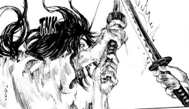

1: Introduction
Unbeatables é um sistema de RPG para aqueles que querem narrar e/ou jogar embates épicos e criar personagens
excepcionais, “imbatíveis”, “especiais”, “não-humanos”.
Feito para temas de fantasia, especialmente Animes e HQ’s, Unbeatables é um sistema de RPG feito para aqueles
que querem criar personagens excepcionais, “imbatíveis” e viver combates emocionantes.
O foco de Unbeatables é o de fornecer um sistema de combate onde os jogadores possuem um alto índice de ações e
opções para lidar com seus adversários.
Ele tem uma forte base em reações e busca ser o mais dinâmico possível sem ser desnecessariamente complicado.
Cada escolha pode mudar o rumo do combate, mas não há uma necessariamente melhor do que a outra (não
intencionalmente), de forma que você pode aderir diferentes estilos de luta.
Forje seu caminho para a vitória com a sua criatividade, os pontos fortes do seu personagem e um pouco de sorte.
2: Character Creation
Personagens possuem diversas características e detalhes próprios que o fazem único. Aqui veremos cada um deles.
ID: Sua identidade. Todo personagem carrega um nome, uma idade, uma aparência… não há regras impostas sobre
isso.
Se o seu personagem deve ter alguma Congenital Trait por nascimento, negocie com o seu Mestre; essa é uma função
que está completamente á controle dele e das Congenital Traits que ele dispor para seus jogadores pegarem.
Leia sobre a distribuição de Atributos, Perks e Stats no Capítulo 3.
Attributes
Vigor: Vitality +1.
O Vigor determina o quanto seu personagem dura em combate.
Strength: Physical Strength +1.
A Strength determina sua força física, o quão imponente seus ataques
são.

Dexterity: Technique +1.
A Dexterity é a sua técnica, a sua capacidade de realizar delicados e precisos
movimentos.
Agility: Speed +1.
A Agility é o quão "leve" seu personagem é, o quão rápido ele consegue se
mover.
Reflexes: Reflex, Perception +1.
Os Reflexes determinam sua velocidade de reação, é o quão agilmente você
consegue agir ao perceber algo.
Acuity: Proficiency, Wits +1.
Conhecimento e domínio de habilidades. Masterize e aprenda diversas
técnicas.
Constitution: Endurance +1.
A Constitution determina o quanto seu personagem sustenta ser atacado. Vigor te
deixa durar em combate, enquanto Constitution reduz o dano de ataques.
Spirit: Spiritual Strength +1.
O Spirit determina sua potência espiritual, mágica.
Mastery
Mastery é um marco que você pode alcançar com seus atributos ao evoluí-los até um certo ponto.
Ao alcançar uma Mastery, você recebe uma Mastery Mark; os benefícios do seu atributo são concedidos uma segunda
vez apenas para a compra que
alcançou o marco. O Ponto 6 em Agility vale Speed +2, por exemplo, mas o Ponto 7 não vale benefício algum.
Alcançar uma Mastery Mark vai aumentar a Mastery em um Mastery Level. Cada Mastery Level faz aquele Attribute
passar a custar +0.5 para ser comprado.
"Beginner" não concede bônus algum e nem aumenta os custos de compra.
Beginner: 5 ou Menos em um Attribute. Não
é considerado um marco de Mastery (não consegue um segundo ponto).
Skilled: 6 em um Attribute.
Master: 11 em um Attribute.
Legend: 18 em um Attribute.
Perks
Perks são os "talentos" do seu personagem. Eles te dão bônus e habilidades específicas.
Alguns Perks possuem mais de um nível para que você possa investir. Cada nível de um Perk custa 1 Perk Point.
Features
Features determinam as características e a personalidade do seu personagem. Eles vão ditar como o seu personagem
se comporta fora de combate.
Shonens costumam ter foco em suas lutas, e não em criar personagens complexos. Isso não quer dizer que os
personagens do jogo não possam ser complexos, mas que as ferramentas usadas para montá-los nesse quesito são
simples.
De novo com Shonens, a personalidade de um personagem e a maneira como a que ele luta ou se comporta em combate
costumam ser absurdamente diferente.
As suas Features vão ser responsáveis por modificar positivamente e negativamente diversas rolagens que ocorram
fora de combate, de forma que ela ditará os fortes e fracos do seu personagem. Para isso há uma lista de
diferentes Features, e você escolherá algumas delas para serem seus "Traits" e outras para serem suas "Flaws".
Há alguns atos fora de combate como pular de um galho para o outro ou atingir um alvo de longe que podem ser
confundidos com habilidades de combate. Você estará testando suas habilidades de combate nesses casos, então não
roda uma Feature.
Você distribui as Traits e Flaws á partir de quatro níveis diferentes (quantas você pode distribuir vai depender
da sua ficha).
Traits: Minor Traits: +1. Major Traits: +3. Epic Traits: +6. Legendary
Traits: +10.
Flaws: Minor Flaws: -1. Major Flaws: -3. Epic Flaws: -6. Legendary Flaws:
-10.
Lista de Features:
Appearance: Sua beleza física.
Bravery: Sua coragem, habilidade de ignorar o medo.
Charisma: Sua linguagem corporal e magnetismo pessoal. É o quão bem você se
comunica e o quanto as pessoas querem te ter por perto.
Empathy: Sua habilidade em sentir que há algo errado com alguém
emocionalmente.
Intellect: Sua rapidez de pensamento.
Intimidation: Sua habilidade de aterrorizar alguém com uma ameaça
física.
Leadership: Sua habilidade de inspirar os outros á seguirem certos
ideais.
Patience: Sua calma, habilidade de não ficar ansioso ou se irritar.
Persuasion: Sua habilidade de manipular os outros á fazerem sua
vontade.
Survival: Seu conhecimento de caça, gastronomia, meteorologia e o básico para
sobreviver.
Congenital Traits

Congenital Traits são obtidas por nascimento e por puro privilégio que é concedido pelo mestre. Diferente das
Traits e Flaws, as Congenital Traits podem conceder qualquer tipo de bônus, seja ele um bônus de feature, de
atributo ou até mesmo de combate. Elas são irrestritas e o motivo delas existirem é para que o sistema de
Unbeatables possa ser transformado em diferentes temas.
Vamos supor que você quer fazer um RPG de DBZ. Esse é um RPG onde os níveis dos personagens são muito altos, de
forma que não são traduzidos tão fielmente assim pelo sistema de atributos. Então você pode criar, por exemplo:
"Power Level" (name of the Congenital Trait), com um efeito que receberá um número específico. Pra tantos % de
Power Level que esse personagem possui acima do outro, mais bônus em diversos modificadores de combate ele
receberá.
Dentro de um mundo, as Congenital Traits também podem definir vantagens genéticas.
"Uchiha Clan" (name of the Congenital Trait). Aqueles que possuirem essa Congenital Trait vão ter um bônus de +1
de Dano em Jutsus do tipo Katon e Shurikenjutsu, e vão liberar a Skill Tree exclusiva do Clã Uchiha.
3: Experience
Experiência (XP) é o valor que determina o quão poderoso um personagem é. Todo personagem possui um valor de
experiência, e quanto mais experiência ele tiver, maior será o seu nível.
Níveis são acessados por quantias de experiência específica. Por padrão, os Attributes e Perks do seu personagem
são 0 e precisam ser distribuidos através dos Points.
Como já citado antes, os Níveis tem um requerimento de XP para serem alcançados. O valor que cada nível pede é
fixo, ou seja, o contador não reseta quando você alcança um novo nível.
Leveling Up
HP: Vitality*4 * Level.
MP: Proficiency*2 * Level.
SP: Vitality * Level.
AC: 1.0.
A Armor Class é melhorada com Superhuman Features de
Constitution.
Level 0: 10 Attribute Points. 1 Perk Point.
Every 1 Level: +1 Attribute Point.
Every 2 Level: -.
Every 4 Level: -.
Every 5 Level: +1 Perk Point.

Ranks
É possível receber um "Rank" baseado em qual nível você está.
Ranks são similares ás Congenital Traits. Eles só podem ganhar significado através do Mestre, caso ele queira
prender alguma técnica, equipamento ou coisa do jogo para ser acessível apenas pra personagens de certo Rank.
Um exemplo de Rank seria: "no meu Jogo de Naruto, todos os personagens que passarem da Prova Chunin receberão o
Rank "Chunin" e ganharão acesso á uma bandana especial que concede +10 de MP", ou "no meu Jogo de Jujutsu
Kaisen, personagens acima do Nível 15 são considerados personagens de Grau Um e possuem acesso á técnica:
Manipulação Avançada de Energia Amaldiçoada".
Level 0 - 2: [0] 0 XP. [1] 30 XP. [2] 60
XP.
Um mero estudante da academia que acabou de iniciar.
Level 3 - 6: [3] 100 XP. [4] 150 XP. [5]
250 XP. [6] 400 XP.
Você já é experiente o suficiente para ir lidar com inimigos de baixo
escalão.
Sasuke no País da Névoa.
Level 7 - 10: [7] 500 XP. [8] 650 XP. [9]
800 XP. [10] 1.000 XP.
Considere-se a elite entre os novatos. Você tem uma certa esperança contra
ameaças maiores.
Lee Part I.
Level 11 - 14:
Você possui uma habilidade razoável. Não se destaca mas pode ser considerado um
"adulto" em termos de força, alguém que não vai desapontar.
Kabuto Part I.
Level 15 - 19:
Sua habilidade se destaca entre os demais. Talvez você ainda não seja visto
entre os mais fortes, mas você já não é visto como um qualquer.
Yuji e Megumi em Shibuya.
Level 20 - 24:
Você é visto como um exemplo realista de força. Não há nada mundano que não
esteja no seu alcance em derrotar.
Mei Mei, Nanami, Sasuke no País do Ferro.
Level 25 - 29:
Você reina entre os fortes. Se antes você era visto como um exemplo de força,
aqui você é visto como diferenciado entre os mais fortes.
Zenin Naobito, Oonoki, Yondaime Raikage.
Level 30 - 39:
Você fugiu do "mundano". Monstros não tem espaço dentro das competições de
humanos; sua força é medida como especial.
Bijuus, Itachi, Maki, Nagato, Yuta.
Level 40 - 49:
Você é uma besta, um tipo de desastre natural por conta própria. Exércitos de
homens precisam se juntar para te parar, e não há ameaça alguma que você não tenha uma chance de
derrotar.
Kenjaku, Kyuubi, Obito como Jinchuriki, Yorozu.
Level 50: [50] 100.000 XP.
Imbatível. Acima de tudo e todos, você é como um deus, não há monstros ou
desastres que possam te ameaçar. Sua força pode ultrapassar os horizontes do próprio sistema.
Gojo, Hashirama, Madara, Sukuna.
Á partir do 50, os Níveis devem ser customizados pelo próprio mestre. É
recomendado que esse sistema de níveis não seja visto como um powerscaling entre obras diferentes;
apesar de não ter problema em ultrapassar o nível máximo caso você mestre um jogo como Dragon Ball Z,
não compare o Goku de DBS com um Nível 50 de Naruto.
Isso vai te fazer ter vontade de dar um Nível absurdo como 500 para seus
jogadores que tiverem SSJ Azul, mas você pode brincar com as Congenital Traits para dar a impressão da
força daquele mundo e tratar o sistema de níveis de acordo com o Anime. Nível 20 era quando estavam na
saga Freeza, nível 30 na Cell... use sua criatividade.
Não se sinta desmotivado de ultrapassar o nível 50, aliás, especialmente para
grandes vilões ou ameaças. Ás vezes os vilões conseguem cumprir parte dos seus planos de obter pôder e
se tornam ainda mais fortes, como no caso do Madara após sua morte, então abra essa customização para
dar mais vida ao seu jogo.
4: Modifiers
Modifiers são responsáveis por conceder bônus (e potenciais penalidades) para as rolagens das mais variadas
ações e reações.
Elas são sempre ganhas através de uma outra fonte, como atributos, skills, passivas ou equipamentos.
Lista de Modifiers;
Character
Esses Modifiers pertencem diretamente ao seu personagem. Alguns não são obtíveis em atributos, mas eles não
possuem condições para serem rodados, são inerentes seus.
Números sempre são arredondados para cima se chegarem na marca de .5 ou mais.
Action Points: O número de vezes que você
pode agir no turno (AP).
Armor Class: A Armor Class determina o
quão dura e resistente o seu corpo, a sua defesa é. Ela não se difere de Tenacity conceitualmente, só em
balanceamento. Tenacity costuma ser encontrada como pequenos modificadores, enquanto a Armor Class costuma
de fato representar um novo grau de resistência, como uma armadura de verdade que seu personagem vestiu
(AC).
Endurance: O quão "durão" você é, o quão
sensível á tomar dano o seu personagem é (End).
Também auxilia os personagens á resistir os efeitos de Wounds, mas o modificador costuma ser ignorado na hora de
uma Wound ser infligida.
Health Points: Sua saúde e determinação
em combate. Enquanto seu HP não for zerado, você pode continuar lutando (HP).
Health Recovery: Recupera sua vida em
turnos de recuperação (HR).

Magic Points: Sua fonte de magia e o
quanto consegue conjurar em combate (MP).
Magic Recovery: Recupera sua magia em
turnos de recuperação (MR).
Perception: Sua leitura de ambiente, o
quão bem você percebe seus arredores (Per).
Physical Strength: Sua força física, o
quão bate forte e submete os outros á força (PS).
Reflex: Seus reflexos, tem um foco maior
em reações (Rfx).
Resistance: O quão duro seu corpo ou algo
que está te defendendo é. Resistência diminui o dano pelo seu valor fixo e não costuma ser ignorado por
Wounds (Res).
Speed: Sua velocidade, tem um foco maior
nas suas ações e movimentação (Spd).
Spiritual Strength: Sua força espiritual,
capacidade de danificar os outros com habilidades mágicas (SS).
Stamina Points: Sua fonte de stamina,
determina o quão bem fisicamente você está para lutar. A Stamina costuma ser acumulada com cansaço e com
ferimentos, pois ela não trata apenas do seu folego, mas sim do seu condicionamento físico em geral
(SP).
Stamina Recovery: Recupera sua stamina em
turnos de recuperação (SR).
Technique: Sua expertise técnica em
combate e o quão meticuloso você consegue ser com os seus movimentos, afeta a sua precisão e sua habilidade
com artes marciais (Tec).
Tenacity: Tenacity representa o quão
"duro" seu corpo é, o quão difícil é de danificar ele.
É superior á Endurance em relação á reduzir dano pois não costuma ser ignorado por Wounds.
Wits: (Wit).
Equipment
Damage: Dano que será jogado com o Item
(Dmg).
Durability: É a vida e a resistência do
item (Dur).
Hardening: Hardening é um valor que
transformará qualquer Slashing / Piercing Damage que seu personagem tomar em Concussion Damage.
Sobrou 3 de Damage, então esses 3 de Damage vão ser considerados do seu Tipo original (Slashing ou Piercing, que
antes estavam sendo transformados em Concussion).
Model: Compartilha características de
Equipaments com o mesmo Model (por ex., Katanas e Nodachis são do mesmo Model, mas possuem diferenças únicas
de tamanho, dano e etc). (Model).
Name: Nome único do Item (Name).
Reach: Alcance do Item (Rch).
Special Effect: Efeito que o Item concede
(Speff).
Skill
Action Cost: Custo de Action Points da
Skill (AC).
Cooldown: Pode ter Turns, Rows ou Dias
que você deve esperar até poder usar de novo. (Cd).
Damage: Dano da Skill (Dmg) .
Limb: Qual Limb a Skill usa para atacar
(Limb).
Nature: Se há um elemento da natureza
(Nat).
Parent: "Herda" uma Skill específica.
Funciona exatamente da mesma forma que a Skill mencionada, tendo detalhes diferentes que serão citados nela
(Par).
Reach: Alcance da Skill, até onde ela
alcança (Rch) .
Skill Speed: Skills possuem sua própria
fórmula de velocidade. Skill Speed recebe um Tipo específico, e esse Tipo determinará um Atributo para esse
Modificador (ex.: se a Skill Speed for Accuracy, isso significa que a Skill Speed é Technique x 1) (SKS).
Accuracy: Technique.
Evocation: Spiritual Strength.
Martial: Speed.
Strength: (Str) Se refere á Physical ou
Spiritual Strength do Usuário, variando se a Skill for Physical ou Magical, respectivamente.
Tests
Breakthrough: SKS [0.5] + Tec
[0.3].
Evasion: Rfx [0.5] + Spd [0.3].
Grappling: Tec [0.5] + PS [0.3].
Guard: Tec [0.5] + Rfx [0.3].
Initiative: SKS [0.8].
Intuition: Per [0.5] + Wit [0.3].
Precision: SKS [0.5] + Tec [0.3].
Response: SKS [0.5] + Rfx [0.3].
Stealth: Wit [0.5] + Tec [0.3].
5: Skills
Skills são o fundamento de como agir dentro de combate. Seja atacando ou defendendo, você vai estar fazendo isso
através de Skills.
Skills são separadas entre muitas fatias, mas a principal delas é a separação entre "Common Skill" e "Special
Skill".
Common Skills são Skills que todos possuem simplesmente por criar o personagem. Elas são Skills básicas como
socar, chutar, correr, pular... habilidades que todos possuem por natureza, mesmo que não as domine.
Special Skills são Skills que precisam ser obtidas de algum jeito especial, seja através de Perks ou de uma
árvore de Skills que só você tem por causa de uma Congenital Trait.
Além disso, Common Skills normalmente servem para funcionar como fundamento para algumas Special Skills.
"Punch", por exemplo, é uma Skill muito básica, e se houver uma Special Skill chamada "Hook" (golpe de Boxe),
ela provavelmente herdará a Common Skill de Punch.
Isso significa que ela será idêntica ao Punch, mas terá algumas propriedades a mais (ou á menos) comparada á
Skill parente.
Classes

Action Classes: Todas as Classes á seguir
são categorizadas como "Actions".
Attack: Alvejam um adversário hostilmente.
Support: Alvejam um aliado.
Enhancements: Fortificam outras ações e reações, não possuem alvo.
Tactical: Interagem com o cenário ou com você mesmo.
Reaction Classes: Todas as Classes á
seguir são categorizadas como "Reactions".
Vale notar que algumas delas possuem Common Skills com os exatos mesmos
nomes.
Block: A habilidade de levantar uma guarda e receber o ataque nela. Capaz de
absorver dano, as chances de sair ferido são altas.
O bloqueio sempre se refere á levantar os braços para defender. Estar empunhando
uma arma não te permite usá-la para bloquear, apenas para Aparar.
Counter: A habilidade de atingir um adversário no meio do golpe dele, impedindo-o
de concluí-lo.
Dodge: A habilidade de sair da direção de um golpe, fazendo ele não atingir mais
do quê o ar.
Parry: A habilidade de manualmente remover um golpe da sua direção com uma guarda
mais precisa e agressiva.
Class Types
São os sub-tipos de cada class, determinam coisas como testes de atk vs def
Attack: Accuracy, Martial, Evocation, Mental (Wit vs Wit)
Types of Damage
Physical Damage: (Strength + Skill
Damage) * Skill Power * Attack Table.
Magical Damage: (Spirit + Skill Damage) *
Skill Power * Attack Table.
Damage Reduction: (Endurance + Tenacity)
* Armor Class.
Um bônus em Damage é aplicado após todos os cálculos, separadamente (ou seja, não é multiplicado). Se o bônus
for em Strength, Skill Damage ou Skill Power, aí ele entra na fórmula.
6: Weapons & Equipment

Essa sessão vai cobrir um pouco os específicos de como as armas se aplicam ao combate, e como a "construção" das
armas funcionam.
Models
Como já mencionado anteriormente, toda arma possui um Model. Isso significa que ela é modelada á partir de um
design "parente", do qual ela vai herdar todas as suas propriedades e então adicionar as suas características
únicas.
Pense em um Martelo. Martelos tem todo o seu formato único e aqueles que usem de um martelo pra combate possuem
um arsenal específico de técnicas, correto? Mas e se esse Martelo for um Martelo de Guerra? É aí que nós vamos
ter de mexer na arma, e não no modelo. O martelo de guerra é um martelo, mas seu peso será único, ele terá
algumas ações a mais que outros martelos não possuem e seus bônus / penalidades também serão únicos.
Lista de Models:
Close Combat
Sword
Type: Slashing, Piercing.
Actions: Cut, Pierce, Bash.
Axe
Type: Slashing.
Actions: Hack and Slash, Cut, Bash.
Spear
Type: Pierce.
Actions: Bash, Cut, Pierce.
Hammer
Type: Concussion.
Actions: Bash.

Shield
Type: Concussion, Protection.
Actions: Bash, Raise Shield, Shield Block.
Chains
Type: Concussion.
Actions: (agarrar).
Sickle
Type: Slashing, Concussion.
Actions: (correntes), (foice).
Kusarigama
Type: Slashing, Concussion.
Actions: (correntes), (foice).
Throwable
Shuriken
Type: Slashing.
Actions: Throw.
Throwing Knive
Type: Piercing.
Actions: Throw.
Shooting
Bow
Type: Piercing.
Actions: Shoot.
Pistol
Type: Slashing.
Actions: Shoot.
Unarmed Combat

Não estar equipando uma arma faz você estar "Unarmed".
Unarmed
Type: Concussion.
Actions: Punch, Kick.
Benefits: Speed +1.
Parries redirecionam os ataques para seus Braços.
Wearing Weapons
Parries redirecionam os ataques para a sua Arma, e não para seus Braços.
É preciso gastar um Step para recuperar uma arma que foi Desarmada. Ser atacado no meio do Step vai te aplicar
"Off-guard".
Ataques que são defendidos pela sua Arma vão testar a Durabilidade dela. Além disso, é comum que, caso seu
oponente seja fisicamente mais forte que você, sua Stamina sofra dano como consequência de não suportar defender
um ataque muito pesado.
Wearing Armor
Armaduras costumam te oferecer Resistência e te protegem contra ferimentos pelo custo de sacrificar mobilidade
(na maioria das vezes).
7: Tests & Conflict
Como o nome sugere, um "Test" vai testar as habilidades do seu personagem. Tests podem ter sucesso ou podem
falhar.
Quando um Test depende do resultado do Test de um adversário, isso se torna um "Conflict". O vitorioso em um
Conflict é aquele que tiver um maior resultado, basicamente.
Todo Test pede por Modifiers, que vão ser adicionados ao seu dado para modificar o resultado final do seu Teste.

Dices
Roll: 1d12 (se um dado diferente não for
especificado).
Critical Hit: Obtidos quando você alcança
o número máximo que pode ser tirado no dado.
Critical Hits vão conceder um acréscimo de um terço do resultado do Dice no Teste (arredondado pra baixo).
Ou seja, se você rodou um 1d12, esse teste receberá um +4.
Critical Error: Obtidos quando você
alcança o número mínimo que pode ser tirado no dado.
Funciona da mesma forma que o Critical Hit, mas o completo oposto.
Difficulty: As vezes você não terá um
adversário direto no dado; o conflito não será entre você e um adversário, e você estará sozinho para jogar
seu dado. Mas como você saberá que venceu esse teste se não há um oponente? É pra isso que o conceito de
"Difficulty" existe.
Difficulty vai ser basicamente um número pré-determinado pelo seu Mestre ou pelo sistema que você deve
empatar ou ultrapassar para "vencer."
Exemplo: Você quer fazer um bolo de morango. Seu mestre determina que essa não é uma tarefa tão dificil; se
você tiver um livro de culinária em mãos, só vai precisar tirar um 6. Caso contrário, já que seu personagem
não tem um conhecimento prévio em culinária, precisará tirar um 15. Essa é a dificuldade.
Rolling Actions
Pra não roubar o espaço da sessão de combate, aqui nós vamos ser objetivos e focarmos na parte básica de como as
Ações funcionam.
Choosing a Action: Dentro do seu Turno,
você vai ter diversas ações para poder escolher. Assim que decidir qual ação quer jogar, você vai precisar
de um alvo. Esse alvo deve ser um outro jogador, que 99% das vezes vai ser um oponente.
A Ação pedirá um Test seu e do seu oponente. Isso significa que voces entrarão em
Conflict, pois o resultado de um será relevante para o outro.
Se chegar á um ponto onde uma ação não peça um teste do seu adversário, como é o caso padrão de quando você
for causar dano, isso significa que não há um teste adversário. O sucesso da ação é determinado unicamente
pelo seu Test.
O exemplo para por aqui. Ele foi breve apenas para que se possa visualizar como os Tests são rodados,
mas será revisitado com os detalhes que realmente montam o combate no capítulo 9. Além disso, no próximo
capítulo, entenderemos como as nossas vitórias e derrotas nesses Tests vão ser aproveitadas.
8: Advantages
Advantages são um dos pilares fundamentais do combate do jogo. A maior parte das ações possui um alvo ou
um adversário, e a Advantage determina o grau de sucesso que você obteve em bater seu adversário naquele
teste.
Vamos supor que você quis perfurar o peito do seu adversário na sua ação. Se você vencer seu teste de
Acerto, isso significaria que você o perfurou, mas supondo que seu resultado foi 18 e o do adversário
foi 17, vencer seu adversário por uma mera diferença de 1 não resultará em um pulmão perfurado pois é
uma vitória muito pequena que não deveria coincidir com um resultado tão decisivo.
Essa diferença entre seu resultado vitorioso e o resultado do adversário é chamado de "Advantage", e o
oposto (o resultado negativo do seu oponente e o seu resultado) é chamado de "Failure", mas
geralmente só lemos a Advantage.
Baseado na diferença do resultado, as Advantages são separadas em 4 Graus;
0: Zero Advantage.
1 ~ 4: Small Advantage.
5 ~ 9: Medium
Advantage.
10 ~ 12: High Advantage.
13+: Critical Advantage.
Esses Graus são usados para obter os elementos que citaremos á seguir.
Classes
Ao obter uma Advantage, a Skill poderá ser beneficiada com algum bônus. Existem bônus que afetam todos
os Attacks, como no caso da Hit e Damage Table, e existem bônus que são únicos para tal Skill.
As Advantages possuem nomes próprios e "Classes". Se uma Advantage te pedir para que você obtenha uma
Medium Advantage, por exemplo, mas também tiver uma versão com o mesmo nome que peça uma High Advantage,
isso significa que essa Advantage possui uma Class 1 e Class 2, respectivamente, e a Class mais alta
será a utilizada.
Classes não acumulam os seus bônus.
Maneuvers
Maneuvers são Skills que podem ser usadas caso você tenha feito os requerimentos dela na última ação ou aplicando uma condição no adversário. Ás vezes você possui a oportunidade específica para usar uma Maneuver, mas é opcional.
Ás vezes uma Maneuver vai ser algo mais figurativo do quê uma real "ação". Socar alguém é uma ação, e existe uma Maneuver de jogar a pessoa pra longe com esse soco caso ele tenha tido contato. Na lógica o soco jogar a pessoa pra longe deveria fazer parte da ação e não uma nova ação separada, mas a Maneuver existe como uma forma criativa de te dar a opção, então tem momentos onde essa "incoerência" acontece.
Exemplo: Você agarrou o braço de alguém (Action) e agora quer torcer (Action do tipo Maneuver). Você atacou alguém e obteve contato (Hit) e quer ter a intenção de lançar essa pessoa pra longe com o ataque (Action do tipo Maneuver).
Disadvantages
As Disadvantages funcionam como Advantages, mas ao invés de um personagem receber elas e ser bonificado,
o personagem "toma" uma Disadvantage através de requerimentos como tomar muito dano, tomar tanto de
acerto em tal local do corpo, etc.
9: Combat
Finalmente, chegamos na sessão que vai pegar a maior parte do que foi apresentado até agora e explicar
onde cada uma dessas coisas se encaixam.
Primeiro, antes do combate, existe um cenário montado. Um está buscando o outro no meio de uma floresta?
Um está atacando o outro no meio da sua frase de impacto? Ou os dois estão se cumprimentando e iniciando
um combate honrado?
No mais normal dos casos, que é onde dois ou mais jogadores podem se ver e um já interpretou a vontade
de dar início ao combate, todos presentes rodam Initiative x. Initiative.
Initiative? Não encontrei esse modificador aqui...
Lembra na sessão 7, quando comentamos que existem alguns nomes que nós chamamos de "Test Modifier" e que
eles são declarados na hora da ação? Aqui nós estamos falando da ação de iniciar o combate, e a
Initiative [Speed x 0.5] é um modificador desse teste quê, como mencionado ao lado, recebe Speed x 0.5
como valor.
Porquê não Speed x 0.5 diretamente?
Vários Test Modifiers são usados para diferentes ocasiões, como é o caso da Initiative. Então pra
começar o combate, rodamos;
Início de Combate: 1d12 +
Initiative.
Nós tiramos 10 e o oponente tirou 7. Vencemos, e agora o jogo está no nosso Turno.

Turns
Aquele que detém o Turno é o "jogador da vez", que poderá agir através de Skills do tipo "Action" pelo
custo de Action Points.
Todo Personagem inicia seu Turn com 5 Action Points, e seu Turn se encerrará automaticamente ao chegar
aos 0 Points.
Após seu Turno ser encerrado, o próximo na ordem jogará. Essa ordem é determinada por quem tirou os
melhores resultados de Initiative no início, e após todos jogarem, uma "Row" se encerra.
Seus Action Points são resetados para 3 no momento que uma Row inicia. Isso significa que, caso você
obtenha mais Action Points de alguma forma durante o turno, você só poderia usar eles deliberadamente
caso seu turno fosse o último, uma tática arriscada já que tem como perder Action Points.
Alguns Vilões ou personagens que estejam lutando contra múltiplos oponentes podem querer jogar no último
turno por conta disso.
Quando 5 "Rows" se encerram, nós temos um "Shift". O Shift costuma ser usado para um Recovery Turn e
também como referência para que alguns eventos ocorram no meio do combate como a chegada de novos
personagens ou algo do tipo.
Choosing a Action
Estamos no nosso Turn, então precisamos escolher uma Action. Por motivos de organização, Actions e
Reactions terão a sua sessão própria onde mostraremos a lista de ações que você pode escolher, mas vamos
escolher uma bem básica e atacar nosso oponente com um "Hit".
Hit custa 1 Action Point e é uma Action da Class Attack.
Agora que escolhemos uma Action e já nos decidimos, então nós á declaramos (não pode voltar atrás) e
agora é hora do oponente escolher uma Reaction.
O oponente decidiu que a sua melhor chance de defesa era usando um "Dodge", que é uma Common Skill da
Class Dodge (eu mencionei que algumas Skills possuiam o mesmo nome).
Attack and Defense
Attack e Defense são os testes primários para determinar se um personagem foi acertado ou não. Eles são
sempre modificados pela Reação escolhida, e o "Attack" e a "Defense" são modificados por Test Modifiers
específicos.
No caso de Dodge, ela pedirá que o;
Atacante jogue Hit: 1d12 + (Skill Speed x 0.5 + Technique x 0.3).
Defensor jogue Evasion: 1d12 + (Rfx x 0.5 + Spd x 0.3).
Hit é o Attack e a Evasion é a Defense desse Conflict.
O Atacante tirou um Resultado de 18, enquanto o Defensor teve um Resultado de 14. Há uma diferença de 4,
então isso significa que ele obteve uma Small Advantage em cima da sua Defense, o quê permite que ele
rode seu Damage.
Damaging your Opponent
O Atacante possui 5 de Physical Strength e 3 de Technique, e Hit é uma Skill de Concussão cujo a Skill
Damage é 0.5 da sua Strength e a Skill Power é 1. Então ele possui +2 de Skill Damage, some pela
Physical Strength pra obter um +7, multiplique pela Skill Power para se manter no +7 e por fim
multiplique pelo Direct Hit da Attack Table, ou seja, x1, e continue no 7.
Dodge não rola dados para reduzir dano, mas todo ataque tem seu dano reduzido naturalmente, então nós
jogamos;
Atacante joga Damage: 7.
Defensor tem 3 de Endurance e 1 de Armor Class, então reduz o dano em 3.
O Atacante causou 4 de Dano.
As contas são chatas, sim, mas a automatização toma conta disso. Você não precisa fazer conta manual
nenhuma, então se preocupe mais nas suas decisões e em só entender as rolagens por cima.
Certo, essa sessão nos ensinou o funcionamento do combate. Entendemos a hora que podemos agir, como
podemos agir, reagir e causar dano, além de entender as peculiaridades de uma ação e de uma reação, e
agora listaremos exatamente todas as ações que você pode escolher e todos os fatores que são aplicados
para controlar o combate.

10: Battle Mechanics
No capítulo passado nós ensinamos como o combate funciona, e nele é possível perceber que existem
diversos detalhes que não aprendemos ainda, como a menção de um Recovery Turn e de uma redução de dano.
Essas são mecânicas exclusivas do combate, não estão atreladas á um personagem específico ou á qualquer
ação, e não parecia fazer muito sentido apresentá-las antes de apresentar o combate.
Recovery Turns
Em todo Shift, um Recovery Turn acontece. Recovery Turns vão restaurar levemente as suas energias em
valores de; 10% do HP Atual, 5% do MP Máximo, 5% do SP Máximo.
Recovery Turns podem ser feitos com mais frequência através de certas Skills.
Recovery Turns possuem três sub-classes; Health Regeneration Turn, Mana Regeneration Turn, Stamina
Regeneration Turn. Eles só são relevantes e lidos se uma Skill trouxer eles á tona, e representam a
habilidade de recuperar um desses três fatores mais rápido.
Fatigue: Um personagem vai sentir
repercussões no seu estado físico se a sua Stamina cair para uma certa quantia.
50% de Stamina: Fatigue [Class 1].
-1d4 em Tests de Speed e Physical Strength.
25% de Stamina: Fatigue [Class 2].
-1d6 em Tests de Speed, Physical Strength e Reflex.
10% de Stamina: Fatigue [Class 3].
-2d4 em Tests de Speed, Physical Strength, Reflex e Technique.
0% de Stamina: Fatigue [Class 4].
Não consegue executar ações ou reações.
A Fatigue só é recuperada quando o personagem alcança 100% da sua Stamina máxima.
Attack Table
Ao obter sucesso em Attack vs. Defense, há uma Lead comum que irá multiplicar o seu Damage. Essa Lead se
chama Attack Table e ela não se diferencia em nada de outras Leads, mas como ela é um elemento essencial
de todo ataque, nós estamos lendo ela aqui.
Em ordem de leitura;
Zero Advantage: É o requerimento pra que essa Lead seja aplicada.
Attack Table: É o nome principal da Lead.
Grazing / Direct / Heavy / Severe Hit: É o nome que foi dado á essa Class da Lead. Todos esses Hits fazem
parte da Attack Table, e dependendo da Class que você obter, você vai estar obtendo uma Class específica
que vai ser identificada por este nome.
Não é obrigatório que as Classes de Leads tenham um Nome secundário, ás vezes elas vão ser referenciadas
como "Nome da Lead [Class ?].".
Attack ; Zero Advantage: Attack
Table, Grazing Hit ; 0.5x Damage [Class 1].
Attack ; Small Advantage: Attack
Table, Direct Hit ; 1x Damage [Class 2].
Attack ; Medium ou High Advantage:
Attack Table, Heavy Hit ; 1.25x Damage [Class 3].
Attack ; Critical Advantage:
Attack Table, Severe Hit ; 1.5x Damage [Class 4].
Damage Table
Mesmo conceito da Attack Table; a Damage Table é uma Lead que funciona através do Damage que foi
causado, mas diferente da Attack Table, ela não concede bônus ao ataque e não é lida por um grau de
Advantage, mas por uma quantia de dano causada.
A Damage Table só costuma ser lida por Wounds.
Damage ; 10% do HP Atual: Damage
Table,
Minor Damage [Class 1].
Damage ; 20% do HP Atual: Damage
Table,
Medium Damage [Class 2].
Damage ; 33% do HP Atual: Damage
Table,
Major Damage [Class 3].
Damage ; 51% do HP Atual: Damage
Table,
Critical Damage [Class 4].
Damage Reduction
Todo Damage recebido é reduzido por (Endurance + Tenacity) * Armor Class.
Algumas Wounds ignoram a redução de dano da Endurance para que a Wound seja causada. O Damage em si não
é reduzido neste caso, mas a sua redução não é contada na leitura do quê a Wound precisa para ser
causada.
Tenacity também é um modificador que reduz o dano recebido, mas este não é um modificador "comum" (não
está nos atributos, precisa ser obtido em Skills ou Weapons). As Wounds que ignorarem Endurance não vão
ignorar Tenacity.
Tenacity e Endurance nunca podem ser reduzidas para valores negativos (-1, -2...).
Aim
Aim é a zona do corpo do oponente onde você vai atacar. Alguns Attacks possuem uma Aim própria que não
pode ser alterada, mas boa parte dos Attacks vai pedir para que você determine uma Aim pra ele.
Entre as Aims possíveis, temos;

Head, Arms, Legs, Body.
As Penalidades são aplicadas através do Sistema de Wounds.
Sofrer um Attack nas suas Legs ou nos seus Arms transforma o Hit em um "Grazing Hit".
Mental Warfare
Lutas não são travadas só no corpo a corpo. Através da sua Astúcia, você pode montar uma estratégia ou
usar de artimanhas para atingir um ataque definitivo.
Tricks: Tricks são uma das formas
de usar sua Astúcia contra seu oponente. Tricks são acessados através da Skill "Trick", que baseado
na sua Advantage, te permite usar certos Maneuvers.
Tactics: Tactics são obtidas
diretamente pela Skill e diferem de Tricks.
Elas não são impostas sob o seu oponente, mas sim concedidas como uma condição benéfica ao seu
personagem caso ele cumpra alguns requerimentos da Tática.
Diferente de Tricks, as Tactics não são "Mind Games". As Tactics são uma
preparação, uma estratégia montada que sua mente e seu corpo estarão programados para executar,
como se colocar na defensiva ou até algo mais físico como gastar mais energia para se colocar em
movimento constante e se mover mais rápido.
11: Common Skills
Vamos listar todas as Common Skills nessa sessão, além das Maneuvers e Leads que elas oferecem.
Tudo o quê uma Skill concede é individual dela mesma, o quê significa que nós não teremos Leads que são
concedidas por mecânicas de batalha (como as listadas acima) ou Leads que são concedidas pelo Damage
Type da Skill, pois isso não pertence unicamente á ela, e sim á um fator que engloba todas as Skills
daquele Type.
Common Actions
Action Cost: 1
Type: Concussion
Class: Attack, Martial
Damage, Power: 0.5 Strength, 1
Effects: Não pode dar Aim em Legs.
Action Cost: 1
Type: Concussion
Class: Attack, Martial
Damage, Power: 0.5 Strength + 1, 1.2
Attack: -1
Effects: -
Action Cost: 1
Type: Slashing
Class: Attack, Martial
Damage: Weapon, Weapon
Effects: -
Action Cost: 1
Type: Penetration
Class: Attack, Martial
Damage: Weapon + 1, Weapon + 0.2
Effects: -
Action Cost: 1
Type: Penetration
Class: Attack, Accuracy
Damage: Weapon
Effects: -
Maneuvers
-
Action Cost: 1
Type: Weapon
Class: Attack, Accuracy
Damage: Weapon
Effects: -
Maneuvers
-
Action Cost: 1
Type: Neutral
Class: Attack, Martial
Damage: 0
Effects: Aplica "Grabbed".
Action Cost: 1
Type: Neutral
Class: Attack, Martial
Damage: 0
Effects: Aplica "Grabbed".
Action Cost: 1
Type: Neutral
Class: Attack, Martial
Damage: 0
Effects: Aplica "Grabbed".
Action Cost: 1
Class: Attack, Mental.
Attack: 1d12 + Wits.
Defense: 1d12 + Wits.
Effects: ganha 'trick point'?
Common Reactions
Action Cost: 0
Type: Block
Test: 1d12 + Guard + 2 x. 1d12 + Breakthrough
Effect: Aplique "Blocked" á Action.
Action Cost: 0
Type: Dodge
Test: 1d12 + Evasion x. 1d12 + Precision.
Effect: Evita o Attack.
Advantages
Defense, Med. Adv: Recebe 1 Opportunity Maneuver.
Action Cost: 1
Type: Block
Test: 1d12 + Response - 1 x. 1d12 + Initiative
Effects: Evita o Attack. Recebe 1 Opportunity Attack.
Advantages
Defense, Med. Adv; Counter Attack [Class 1]: A Opportunity Attack recebe Hit +1.
Defense, Hg. Adv, Counter Attack [Class 2]: A Opportunity Attack não pode ser
Bloqueada.
Action Cost: 0
Type: Parry
Test: 1d12 + Guard + 1 x. 1d12 + Breakthrough
Effect: Aplica "Parried" á Action.
Advantages
Defense, Med. Adv: Recebe 1 Opportunity Maneuver.

Maneuvers
Type: Movement.
Requires: Impact.
Effects: .
Type: Movement.
Requires: Shock.
Effects: causa impact, shock é uma wound de concussion que vc pode usar pra causar.
REWORK: não precisa de wound de concussion, só precisa ter conseguido um hit. reembolsa action
se tiver dado certo, chance de dar stun baseado em technique contra str
Type: Movement.
Requires: Shock.
Effects: .
Type: Movement.
Requires: Shock.
Effects: .
Type: Action.
Requires: Small Advantage em Grab.
Effects: .
Type: Action.
Requires: Small Advantage em Grab.
Effects: .
Type: Action.
Requires: Medium Advantage em Grab.
Effects: .
Type: Action.
Requires: Medium Advantage em Grab.
Effects: .
Type: Action.
Requires: Medium Advantage em Grab.
Effects: .
Type: Action.
Requires: High Advantage em Grab.
Effects: .
Type: Action.
Requires: High Advantage em Grab.
Effects: .
Type: Action.
Requires: Critical Advantage em Grab.
Effects: .
Type: Action.
Requires: Grabbed.
Effects: qqr um dos outros grabs mas com duas maos.
Type: Action.
Requires: Grabbed.
Effects: .
Type: Action.
Requires: Grabbed.
Effects: .
Type: Reaction.
Requires: Parried.
Effects: knockback sword, abaixar a espada p pdr atacar.
Type: Action, Reaction.
Requires: Trick.
Effects: .
Type: Action, Reaction.
Requires: Opportunity Maneuver / Attack.
Effects: step pra qlqr lado.
Enhancements
Action Cost: 1.
Type: Martial.
Effects: .
Action Cost: 1.
Type: Martial.
Effects: causa impact, shock é uma wound de concussion que vc pode usar pra causar
impact.
Action Cost: 1.
Type: Martial.
Effects: causa impact, shock é uma wound de concussion que vc pode usar pra causar
impact.
Action Cost: 1.
Type: Martial.
Effects: causa impact, shock é uma wound de concussion que vc pode usar pra causar
impact.
Action Cost: 1.
Type: Martial.
Effects: causa impact, shock é uma wound de concussion que vc pode usar pra causar
impact.
Action Cost: 1.
Type: Martial.
Effects: causa impact, shock é uma wound de concussion que vc pode usar pra causar
impact.
Tactical Actions
Action Cost: 1.
Type: Martial.
Effects: Defense +1 [1 Row].
Action Cost: 1.
Type: Martial.
Effects: eff de predict (nome predict msm).
Action Cost: 1.
Type: Martial.
Effects: .
Action Cost: 1.
Test: Martial.
Effects: .
12: Movement
Movement é uma das partes mais vitais do combate. Ela determina o seu posicionamento em campo e o
controle de distância entre os personagens.
Moving
Attacking while Moving
Reacting to Movement
Chasing
13: Field
Line of Sight
Stealth
Distance
0m: Very Close [VC].
1m: Close [C].
2 ~ 3m: Midrange [M].
4 ~ 6m: Far [F].
7 ~ 10m: Very Far [F].
11m+: Out of Sight [OS].
14: Disadvantages
Wounds
Cold
Concussion
Electric
Fear
Heat
Light
Penetration
Slashing
15: Effects
Conditions
Pressured = faz perder ap se a defense der errado
Stun = Can't act
Flank = hit +1 aumenta result em 25%
Blindside = hit +2 aumenta result em 50%
Shock = reembolsa ap gasto na açao
Collision = toma dano verdadeiro baseado na str do personagem
Dazed
Staggered
Bleeding = tem stacks, a cada 3 stacks aumenta de nivel
Flying
Kneeling
Prone
Airbone
Footwork = lance de tar na ponta dos pes
Backpedalling
Blind
Effects
estatura grande = 2~3m
enorme = 3~5m
imensa = 6~10m
gigante = 11~25m
colossal = 26m+
Unparriable
Unblockable
Undodgeable
Blocked: +0.5PS de reduçao de dano, leva o ataque pros arms. se o golpe for nas legs ou no body, não
redireciona. Se a Aim do Attack for Body, transforme ela para "Heavy Hit".
Grabbed:
Parried:
Passives
Properties
16: Perks
List
Adaptability: .
Cold Blood: .
Dirty Fighter / Brawler?: headbutt, bite, spit on face.
Featherfoot: .
Hitman: .
Iron Fist: .
Martial Artist: pd pegar 6 skills da tree de artes marciais (tipo battle maneuvers). pd pegar qnts vezes quiser esse perk.
Merciless: .
Nimble: .
Quick Draw: .
Quick Feet: .
Reckless: .
Sheer Force: .
Sniper: .
Soulful: pd usar fury. +spirit
Steel Spirit: +Spirit * 1 de HP. +1 de Endurance.
Sturdy: se a endurance for maior q a skill damage, reduz mais dano.
?: Dodge +1 com algumas condições negativas.
17: Skill Trees
Martial Arts
Maneuver pode grabar perna com sua perna, se vencer roll por medium adv pode usar isso daqui como açao de oport
Maneuver arm lock, pode usar com flanco ou se tiver conseguido counterar por md adv. Tb libera headlock q precisa de backside
Shoulder block, bloqueio mais diff e mais pik
Shoulder bash/tackle?
Ippon/shoulder throw
Superhuman Features
18: Jujutsu Kaisen
Congenital Traits
cla gojo +mp
cla zenin +mp
cla inumaki +mp +hp
dezin nanami +technique base
gordon yuta +skill points pela rika (o +mp da rika fica na tree dela)